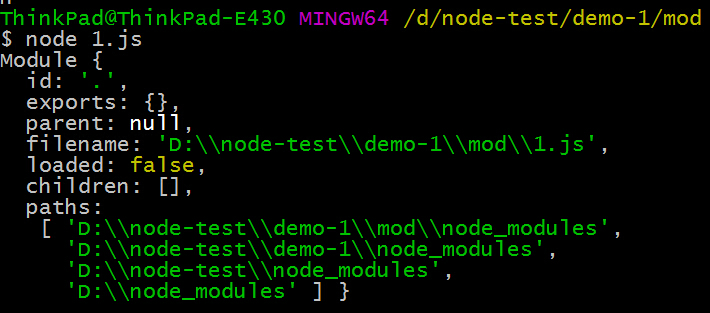

Nodejs系列-3-Module
模块化用来分割，组织和打包软件。每个模块完成一个特定的子功能，所有的模块按某种方法组装起来，成为一个整体，完成整个系统所要求的功能。
本文介绍下nodejs的模块系统
模块系统的组成
- 定义模块
- 模块导入（依赖）
- 模块导出
node中的模块化
- 一个文件就是一个独立的模块
- 模块加载采用同步模式
- 通过 require 函数导入, exports 对象导出
CommonJs规范
node中的模块化规范为commonJs规范，规定:
- 通过require引入模块: require(模块id/路径)
- 通过exports导出模块: exports 对象
符合CommonJS规范的模块应该是这样：
var react=require(./react.js);//引入模块
react.render();//使用模块
module.exports.x = x;//对外输出
module全局对象
每个模块下都有一个module对象，它包含以下几个属性：

exports与module.exports
为了方便，Node为每个模块提供一个exports变量，指向module.exports。这等同在每个模块头部，有一行这样的命令。
var exports = module.exports;
我们可以在export对象下挂载属性和方法：
exports.area = function (r) {
return Math.PI * r * r;
};
exports.x = "hello world"
注意，不能直接将exports变量指向一个值，因为这样等于切断了exports与module.exports的联系。
exports = {}//不要这样做！！！！
不同模块系统下的引入机制
文件模块
如果按确切的文件名没有找到模块，则 Node.js 会尝试带上 .js、 .json 或 .node 拓展名再加载：
优先级：.js >.json >.node
以 / 为前缀的模块是文件的绝对路径。 例如， require('/home/marco/foo.js') 会加载 /home/marco/foo.js 文件。
以 ./ 为前缀的模块是相对于调用 require(./circle) 的文件的。 也就是说， circle.js 必须和 foo.js 在同一目录下以便于 require('./circle') 找到它。
目录作为模块
当我们导入的模块名称是一个文件夹的时候（以 / 、 ../ 或 ./ 开头）：
- 读取该文件夹下的package.json文件
- 导入package.json文件中main选项指定的文件
- 如果不存在package.json或者main指定的文件，这默认自动导入模块文件夹下的index.js 或 index.node 文件
从 node_modules 目录加载
【按目录加载时】：如果传递给 require() 的模块标识符不是一个核心模块，也没有以 / 、 ../ 或 ./ 开头，则 Node.js 会从当前模块的父目录开始，尝试从它的 /node_modules 目录里加载模块；如果还是没有找到，则移动到再上一层父目录，直到文件系统的根目录。
在module对象有一个属性:paths，是一个数组，里面保存的就是这种非路径加载模式需要查找的路径列表（可参照【module全局对象】的截图）
【例子】如果在 /home/ry/projects/foo.js 文件里调用了 require(bar.js)，则 Node.js 会按以下顺序查找：
/home/ry/projects/node_modules/bar.js
/home/ry/node_modules/bar.js
/home/node_modules/bar.js
/node_modules/bar.js
从全局目录加载
【按目录加载时】：如果 NODE_PATH 环境变量被设为一个以冒号分割的绝对路径列表，则当在其他地方找不到模块时 Node.js 会搜索这些路径。
本机测试全局目录为：C:\Users\ThinkPad\AppData\Roaming\npm\node_modules
不过，不建议通过全局目录引用。
核心模块
【按目录加载时】：require() 总是会优先加载核心模块。核心模块定义在 Node.js 源代码的 lib/ 目录下。
例如： require('http') 始终返回内置的 HTTP 模块，即使有同名文件。
ECMAScript6 模块系统
默认不支持，需要加入参数（--experimental-modules）才开启支持，且必须用.mjs后缀
NPM
Nodejs庞大的生态系统中，各个模块依赖的安装与依赖处理是需要一个管理工具来进行管理的，npm全称为Node Package Manager，是一个基于Node.js的包管理器，也是整个Node.js社区最流行、支持的第三方模块最多的包管理器，并且已经成为了非官方的发布Node模块（包）的标准。Nodejs安装包中一般均集成了npm。